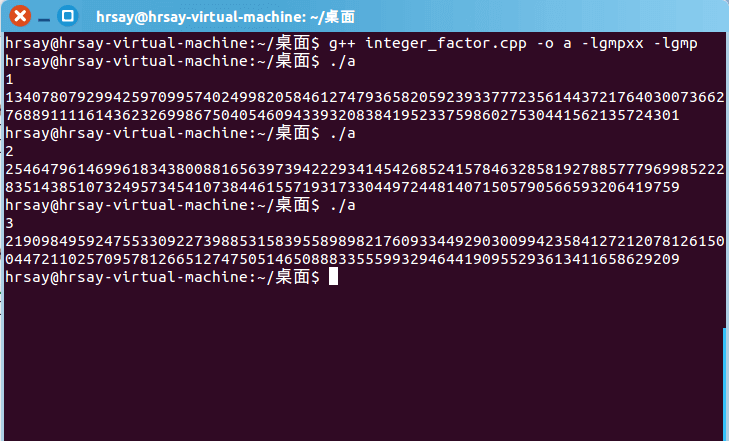

RSA的大整数分解。 > Your goal in this project is to break RSA when the public modulus N is generated incorrectly. This should serve as yet another reminder not to implement crypto primitives yourself. > > Normally, the primes that comprise an RSA modulus are generated independently of one another. But suppose a developer decides to generate the first prime p by choosing a random number R and scanning for a prime close by. The second prime q is generated by scanning for some other random prime also close to R. We show that the resulting RSA modulus N = pq can be easily factored. > > Suppose you are given a composite N and are told that N is a product of two relatively close primes p and q, namely p and q satisfy > > \[ > |p - q|< 2 N^{1/4} > \] > > Your goal is to factor N. > > Let A be the arithmetic average of the two primes, that is. Since p and q are odd, we know that p + q is even and therefore A is an integer. > > To factor N you first observe that under condition given above the quantity N is very close to A. In particular > > \[ > A - sqrt(N) < 1 > \] > > as shown below. But since A is an integer, rounding sqrt(N) up to the closest integer reveals the value of A. In code, A=ceil(sqrt(N)) where "ceil" is the ceiling function. Visually, the numbers p, q, sqrt( N) and A are ordered as in figure 1. > > Since A is the exact mid-point between p and q there is an integer x such that p = A − x and q = A + x. But then > > \[ > N = pq = (A − x)(A + x) = A^2 − x^2 > \] > > and therefore > > \[ > x = sqrt(A^2 -N) > \] > > Now, given x and A you can find the factors p and q of N since p = A − x and q = A + x. > > In the following challenges, you will factor the given moduli using the method outlined above. To solve this assignment it is best to use an environment that supports multi-precision arithmetic and square roots. In Python you could use the gmpy2 module. In C you can use GMP. > > Factoring challenge #1: The following modulus N is a products of two primes p and q where\(|p - q|< 2 N^{1/4}\) . Find the smaller of the two factors and enter it as a decimal integer. > N = 17976931348623159077293051907890247336179769789423065727343008115 > 77326758055056206869853794492129829595855013875371640157101398586 > 47833778606925583497541085196591615128057575940752635007475935288 > 71082364994994077189561705436114947486504671101510156394068052754 > 0071584560878577663743040086340742855278549092581 > > Factoring challenge #2: The following modulus N is a products of two primes p and q where \(|p - q|< 2^{11}N^{1/4}\) . Find the smaller of the two factors and enter it as a decimal integer. > > Hint: in this case \(A−N < 2^{20}\) so try scanning for A from N upwards, until you succeed in factoring N. > > N = 6484558428080716696628242653467722787263437207069762630604390703787 > 9730861808111646271401527606141756919558732184025452065542490671989 > 2428844841839353281972988531310511738648965962582821502504990264452 > 1008852816733037111422964210278402893076574586452336833570778346897 > 15838646088239640236866252211790085787877 > > Factoring challenge #3: The following modulus N is a products of two primes p and q where \(|3p - 2q|< N^{1/4}\). Find the smaller of the two factors and enter it as a decimal integer. > > Hint: use the calculation below to show that sqrt(6N) is close to (3p+2q)/2 and then adapt the method above to factor N. Also note that (3p+2q)/2 may not be an integer, which is a significant property for you to use. > > N = 72006226374735042527956443552558373833808445147399984182665305798191 > 63556901883377904234086641876639384851752649940178970835240791356868 > 77441155132015188279331812309091996246361896836573643119174094961348 > 52463970788523879939683923036467667022162701835329944324119217381272 > 9276147530748597302192751375739387929
问题1和2
问题1和2是类似的，只不过问题2范围比较大。
A为p和q的中点，有： \[ A = \frac{p+q}{2} \]
\[ n = pq = (A-x)(A+x) = A^2 - x^2 \]
于是有 \[ x = \sqrt{A^2-n} \] 因为 \[ 2A = p + q \geq 2\sqrt{pq} = 2\sqrt{n} \] 即 \[ A \geq \sqrt{n} \] 所以一开始令(A = )，向上扫描，直到pq=n为止。
问题3
若模仿上面的做法A取3p和2q的中点，即： \[ A = \frac{3p+2q}{2} \] 但是3p+2q不能被2整除！
于是我们可以A取6p和4q的中点 \[ A = \frac{6p+4q}{2} \]
\[ 2A = 6p + 4q \geq 2\sqrt{6p4q} = 2\sqrt{24n} \]
即 \[ A \geq \sqrt{24n} \] 我们可以找到 \[ 24n = 6p 4q = (A-x)(A+x) = A^2 - x^2 \] 于是有： \[ x= \sqrt{A^2-24n} \]
代码
1 | /* |
运行结果
